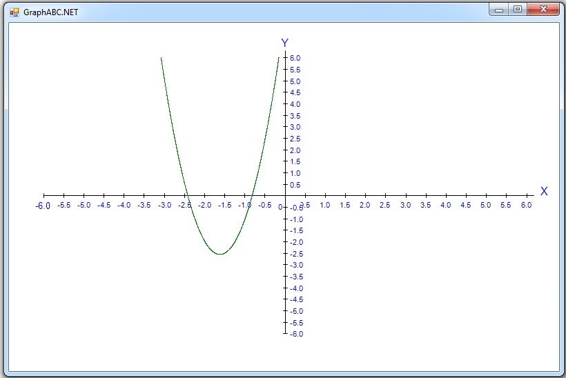
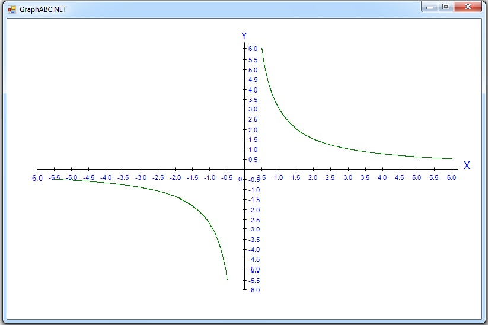
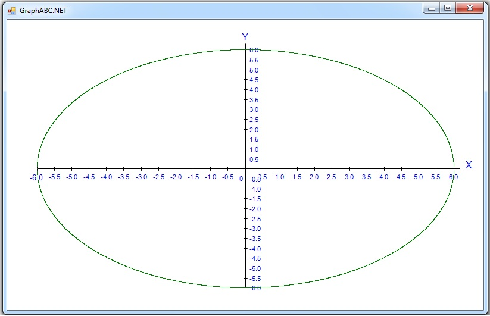

Головна
Математичні криві
" Творчість математика в такім же мірі є створення прекрасного, як творчість живописця чи поета... "
©Годфрі Харді
У світі існує безліч кривих. Кожний з нас може створити власну криву: поставити точку на аркуші та не відриваючи від неї олівця зробити довільний рух, завести лінію куди хочеш. Так і утвориться твоя власна крива. Але існують особливі криві, які мають повні властивості.
А більш допитливим з вас ми пропонуємо дізнатись про такі цікаві математичні криві, як: парабола, гіпербола, локон Аньєзі, еліпс, парабола Нейля, фігури Лісажу.
Ці книги неможливо правильно зобразити від руки на чистому аркуші, вони мають бути побудовані у прямокутній декартовій системі координат.
Координатна площина
 Проведемо дві перпендикулярні координатні прямі, які перетинаються в початку їх відліку — точці О. Ці прямі називаються осями координат. Горизонтальну пряму називають віссю абсцис і позначають Ox, вертикальну — віссю ординат і позначають Oy. Точку О називають початком координат. Ці координатні прямі утворюють декартову прямокутну систему координат. Площина, на якій задана прямокутна система координат, називається координатною площиною. Через будь-яку точку А координатної площини можна провести прямі, перпендикулярні до осей Ox і Oy.
Нехай ці прямі перетнуть відповідно вісь абсцис — у точці з координатою а, а вісь ординат — у точці з координатою b.
Пара чисел (а, b) визначає положення точки А на координатній площині й називається її координатами. Позначають А(а, b). Число а називається абсцисою точки А, число b — її ординатою. Зверніть увагу: має значення, в якому порядку записані числа а і b. Точка В(b; а) не збігається з А(а; b).
Якщо точка лежить на осі абсцис, то її ордината дорівнює 0; якщо точка лежить на осі ординат, то її абсциса дорівнює нулю. Початок координат — О(0; 0).
Проведемо дві перпендикулярні координатні прямі, які перетинаються в початку їх відліку — точці О. Ці прямі називаються осями координат. Горизонтальну пряму називають віссю абсцис і позначають Ox, вертикальну — віссю ординат і позначають Oy. Точку О називають початком координат. Ці координатні прямі утворюють декартову прямокутну систему координат. Площина, на якій задана прямокутна система координат, називається координатною площиною. Через будь-яку точку А координатної площини можна провести прямі, перпендикулярні до осей Ox і Oy.
Нехай ці прямі перетнуть відповідно вісь абсцис — у точці з координатою а, а вісь ординат — у точці з координатою b.
Пара чисел (а, b) визначає положення точки А на координатній площині й називається її координатами. Позначають А(а, b). Число а називається абсцисою точки А, число b — її ординатою. Зверніть увагу: має значення, в якому порядку записані числа а і b. Точка В(b; а) не збігається з А(а; b).
Якщо точка лежить на осі абсцис, то її ордината дорівнює 0; якщо точка лежить на осі ординат, то її абсциса дорівнює нулю. Початок координат — О(0; 0).
Парабола
Криву задають рівняням y=a*x*x+b*x+c, вона є множиною точок,рівновіддалених від фіксованої точки (фокуса) і від поданої прямої (директиси). Криву широко використовують у математиці (графічний спосіб розв'язання квадпатних рівнянь та рівнянь, що зводяться до них), фізиці (траєкторія руху тіла, кинутого під кутом до горизонту, під дією сили тяжіння), астрономії (II космічна швидкість).

uses graphABC; const W = 800; H = 500; {Задаємо функцію:} function F(x,a,b,c: real): real; begin F :=a*sqr(x)+b*x+c; end; var x0, y0, xLeft, yLeft, x, xRight, yRight, y, n: integer; a, b, c, d, x1, a1, b1, c1, y1, mx, my, dx, dy, num: real; i: byte; s: string; begin {1.Малюємо координатну площину} SetWindowSize(W, H); xLeft := 50; yLeft := 50; xRight := W - 50; yRight := H - 50; a := -6; b := 6; dx := 0.5; c := -6; d :=6; dy := 0.5; mx := (xRight - xLeft) / (b - a); my := (yRight - yLeft) / (d - c); x0 := trunc(abs(a) * mx) + xLeft; y0 := yRight - trunc(abs(c) * my); line(xLeft, y0, xRight + 10, y0); line(x0, yLeft - 10, x0, yRight); SetFontSize(12); SetFontColor(clBlue); TextOut(xRight + 20, y0 - 15, 'X'); TextOut(x0 - 6, yLeft - 30, 'Y'); SetFontSize(10); SetFontColor(clBlue); {2.Штрихуємо абсцису } n := round((b - a) / dx) + 1; for i := 1 to n do begin num := a + (i - 1) * dx; x := xLeft + trunc(mx * (num - a)); Line(x, y0 - 3, x, y0 + 3); str(Num:0:1, s); if abs(num) > 1E-15 then TextOut(x - TextWidth(s) div 2, y0 + 7, s); SetFontSize(8); end; {3.Штрихуємо ординату } n := round((d - c) / dy) + 1; for i := 1 to n do begin num := c + (i - 1) * dy; y := yRight - trunc(my * (num - c)); Line(x0 - 3, y, x0 + 3, y); str(num:0:1, s); if abs(num) > 1E-15 then TextOut(x0 + 7, y - TextHeight(s) div 2, s); SetFontSize(8); end; TextOut(x0 - 10, y0 + 10, '0'); {4.Графік будуємо по крапкам} x1 := a; a1 := b-2; b1 := b+7; c1 := b+2; while x1 <= b do begin y1 := F(x1,a1,b1,c1); x := x0 + round(x1 * mx); y := y0 - round(y1 * my); if (y >= yLeft) and (y <= yRight) then SetPixel(x, y, clGreen); x1 := x1 + 0.001 end end. |
Гіпербола
Криву задають рівнянням y=a/x. Гіпербола є множиною точок, для яких модуль різниці відстаней від двох заданих фіксованих точок (фокусів) сталий. Криві такого типу використовують в астрономії (за III космічної швидкості тіло рухається вздовж вітки гіперболи), математиці(дослідження обернених величин).

uses graphABC; const W = 800; H = 500; {Задаємо функцію:} function F(x,a: real): real; begin F := a / x; end; var x0, y0, xLeft, yLeft, xRight, yRight, x, y, n: integer; a, b, c, d, x1, y1, mx, my, dx, a1, dy, num: real; i: byte; s: string; begin {1.Малюємо координатну площину} SetWindowSize(W, H); xLeft := 50; yLeft := 50; xRight := W - 50; yRight := H - 50; a := -6; b := 6; dx := 0.5; c := -6; d :=6; dy := 0.5; mx := (xRight - xLeft) / (b - a); my := (yRight - yLeft) / (d - c); x0 := trunc(abs(a) * mx) + xLeft; y0 := yRight - trunc(abs(c) * my); line(xLeft, y0, xRight + 10, y0); line(x0, yLeft - 10, x0, yRight); SetFontSize(12); SetFontColor(clBlue); TextOut(xRight + 20, y0 - 15, 'X'); TextOut(x0 - 6, yLeft - 30, 'Y'); SetFontSize(10); SetFontColor(clBlue); {2.Штрихуємо абсцису } n := round((b - a) / dx) + 1; for i := 1 to n do begin num := a + (i - 1) * dx; x := xLeft + trunc(mx * (num - a)); Line(x, y0 - 3, x, y0 + 3); str(Num:0:1, s); if abs(num) > 1E-15 then TextOut(x - TextWidth(s) div 2, y0 + 7, s); SetFontSize(8); end; {3.Штрихуємо ординату } n := round((d - c) / dy) + 1; for i := 1 to n do begin num := c + (i - 1) * dy; y := yRight - trunc(my * (num - c)); Line(x0 - 3, y, x0 + 3, y); str(num:0:1, s); if abs(num) > 1E-15 then TextOut(x0 + 7, y - TextHeight(s) div 2, s); SetFontSize(8); end; TextOut(x0 - 10, y0 + 10, '0'); {4.Графік будуємо по крапкам} x1 := a + 6.5; a1 := b - 3; while x1 <= b do begin y1 := F(x1,a1); x := x0 + round(x1 * mx); y := y0 - round(y1 * my); if (y >= yLeft) and (y <= yRight) then SetPixel(x, y, clGreen); x1 := x1 + 0.001 end; a1 := 2.75; x1 := -5.5; while x1 <= -0.5 do begin y1 := F(x1,a1); x :=x0 + round(x1 * mx); y :=y0 - round(y1 * my); if(y >= yleft) and (y <= yright) then SetPixel(x,y,clGreen); x1 := x1 + 0.001; end; end. |
Локон Аньєзі
Криву задають рівнянням y=a*a*a/(x*x+a*a). Цю криву вперше дослідила італьйська математик Марія Гаетана Аньєзі(1748), на честь якої криву й було названо. В англомовних країнах цю криву називають "відьма Аньєзі". Вважають, це сталося тому, що перший переладач робіт Аньєзі англійською мовою - джон Кальсон - не зміг перекласти рідковживаного італійського слова "la versiera".

uses graphABC; const W = 800; H = 500; {Задаємо функцію:} function F(x,a: real): real; begin F :=exp(3*ln(a))/(x*x+a*a); end; var x0, y0, xLeft, yLeft, x, xRight, yRight, y, n: integer; a, b, c, d, x1, a1, y1, mx, my, dx, dy, num: real; i: byte; s: string; begin {1.Малюємо координатну площину} SetWindowSize(W, H); xLeft := 50; yLeft := 50; xRight := W - 50; yRight := H - 50; a := -6; b := 6; dx := 0.5; c := -6; d :=6; dy := 0.5; mx := (xRight - xLeft) / (b - a); my := (yRight - yLeft) / (d - c); x0 := trunc(abs(a) * mx) + xLeft; y0 := yRight - trunc(abs(c) * my); line(xLeft, y0, xRight + 10, y0); line(x0, yLeft - 10, x0, yRight); SetFontSize(12); SetFontColor(clBlue); TextOut(xRight + 20, y0 - 15, 'X'); TextOut(x0 - 6, yLeft - 30, 'Y'); SetFontSize(10); SetFontColor(clBlue); {2.Штрихуємо абсцису } n := round((b - a) / dx) + 1; for i := 1 to n do begin num := a + (i - 1) * dx; x := xLeft + trunc(mx * (num - a)); Line(x, y0 - 3, x, y0 + 3); str(Num:0:1, s); if abs(num) > 1E-15 then TextOut(x - TextWidth(s) div 2, y0 + 7, s); SetFontSize(8); end; {3.Штрихуємо ординату } n := round((d - c) / dy) + 1; for i := 1 to n do begin num := c + (i - 1) * dy; y := yRight - trunc(my * (num - c)); Line(x0 - 3, y, x0 + 3, y); str(num:0:1, s); if abs(num) > 1E-15 then TextOut(x0 + 7, y - TextHeight(s) div 2, s); SetFontSize(8); end; TextOut(x0 - 10, y0 + 10, '0'); {4.Графік будуємо по крапкам} x1 := a; a1 := b-3; while x1 <= b do begin y1 := F(x1,a1); x := x0 + round(x1 * mx); y := y0 - round(y1 * my); if (y >= yLeft) and (y <= yRight) then SetPixel(x, y, clGreen); x1 := x1 + 0.001 end end. |
Напівкубічна парабола(Нейля)
Криву задають рівняннями: x=t*t, y=a*t*t*t. Напівкубічну параболу названо на честь У. Нейля,який знайшов 1657 року довжину її дуги.Ця крива є еталонною в теорії катастроф, оскільки будь-яка каустика вигляду "хвіст ластівки" (зокрема, крива Чирнгаузена) поблизу вершин добре наближається параболою Нейля.

uses graphABC; const W = 800; H = 500; {Задаємо функцію:} function F(x,a: real): real; begin F :=sqrt(a*exp(3*ln(x))); end; var x0, y0, xLeft, yLeft, x, xRight, yRight, y, n: integer; a, b, c, d, x1, a1, y1, mx, my, dx, dy, num: real; i: byte; s: string; begin {1.Малюємо координатну площину} SetWindowSize(W, H); xLeft := 50; yLeft := 50; xRight := W - 50; yRight := H - 50; a := -6; b := 6; dx := 0.5; c := -6; d :=6; dy := 0.5; mx := (xRight - xLeft) / (b - a); my := (yRight - yLeft) / (d - c); x0 := trunc(abs(a) * mx) + xLeft; y0 := yRight - trunc(abs(c) * my); line(xLeft, y0, xRight + 10, y0); line(x0, yLeft - 10, x0, yRight); SetFontSize(12); SetFontColor(clBlue); TextOut(xRight + 20, y0 - 15, 'X'); TextOut(x0 - 6, yLeft - 30, 'Y'); SetFontSize(10); SetFontColor(clBlue); {2.Штрихуємо абсцису } n := round((b - a) / dx) + 1; for i := 1 to n do begin num := a + (i - 1) * dx; x := xLeft + trunc(mx * (num - a)); Line(x, y0 - 3, x, y0 + 3); str(Num:0:1, s); if abs(num) > 1E-15 then TextOut(x - TextWidth(s) div 2, y0 + 7, s); SetFontSize(8); end; {3.Штрихуємо ординату } n := round((d - c) / dy) + 1; for i := 1 to n do begin num := c + (i - 1) * dy; y := yRight - trunc(my * (num - c)); Line(x0 - 3, y, x0 + 3, y); str(num:0:1, s); if abs(num) > 1E-15 then TextOut(x0 + 7, y - TextHeight(s) div 2, s); SetFontSize(8); end; TextOut(x0 - 10, y0 + 10, '0'); {4.Графік будуємо по крапкам} x1 := b-6; a1 := b-2; while x1<=b do begin y1 := F(x1,a1); x := x0 + round(x1 * mx); y := y0 - round(y1 * my); if (y >= yLeft) and (y <= yRight) then SetPixel(x, y, clGreen); x1 := x1 + 0.001 end; x1 := b-6; a1 := b-2; while x1>=a do begin y1 := F(x1,a1); x := x0 + round(x1 * mx); y := y0 + round(y1 * my); if (y >= yLeft) and (y <= yRight) then SetPixel(x, y, clGreen); x1 := x1 + 0.001 end end. |
Еліпс
Криву задють рівняннями: x=a*cos(t), y=b*cos(t). Еліпс - це множина (геометричне місце) всіх точок, для яких сума до двох заданих фіксованих точок (фокусів) стала. якщо a=b, то фокуси еліпса стає колом. Еліпси використовують в образотворчому мистецтві як перспективне зображення кола, в астрономії(планети рухаються по еліптичних орбітах).

uses graphABC; const W = 800; H = 500; {Задаємо функцію:} function F(x,a,b: real): real; begin F :=sqrt((a*a*(b*b-x*x))/b*b); end; var x0, y0, xLeft, yLeft, x, xRight, yRight, y, n: integer; a, b, c, d, x1, a1, b1, y1, mx, my, dx, dy, num: real; i: byte; s: string; begin {1.Малюємо координатну площину} SetWindowSize(W, H); xLeft := 50; yLeft := 50; xRight := W - 50; yRight := H - 50; a := -6; b := 6; dx := 0.5; c := -6; d :=6; dy := 0.5; mx := (xRight - xLeft) / (b - a); my := (yRight - yLeft) / (d - c); x0 := trunc(abs(a) * mx) + xLeft; y0 := yRight - trunc(abs(c) * my); line(xLeft, y0, xRight + 10, y0); line(x0, yLeft - 10, x0, yRight); SetFontSize(12); SetFontColor(clBlue); TextOut(xRight + 20, y0 - 15, 'X'); TextOut(x0 - 6, yLeft - 30, 'Y'); SetFontSize(10); SetFontColor(clBlue); {2.Штрихуємо абсцису } n := round((b - a) / dx) + 1; for i := 1 to n do begin num := a + (i - 1) * dx; x := xLeft + trunc(mx * (num - a)); Line(x, y0 - 3, x, y0 + 3); str(Num:0:1, s); if abs(num) > 1E-15 then TextOut(x - TextWidth(s) div 2, y0 + 7, s); SetFontSize(8); end; {3.Штрихуємо ординату } n := round((d - c) / dy) + 1; for i := 1 to n do begin num := c + (i - 1) * dy; y := yRight - trunc(my * (num - c)); Line(x0 - 3, y, x0 + 3, y); str(num:0:1, s); if abs(num) > 1E-15 then TextOut(x0 + 7, y - TextHeight(s) div 2, s); SetFontSize(8); end; TextOut(x0 - 10, y0 + 10, '0'); {4.Графік будуємо по крапкам} x1 := a; a1 := b-5; b1 := b; while x1 <= b do begin y1 := F(x1,a1,b1); x := x0 + round(x1 * mx); y := y0 - round(y1 * my); if (y >= yLeft) and (y <= yRight) then SetPixel(x, y, clGreen); x1 := x1 + 0.001 end; x1 := a; a1 := b-5; b1 := b; while x1 <= b do begin y1 := F(x1,a1,b1); x := x0 + round(x1 * mx); y := y0 + round(y1 * my); if (y >= yLeft) and (y <= yRight) then SetPixel(x, y, clGreen); x1 := x1 + 0.001 end; end. |
Фігури Лісажу
Криву задають рівняннями: x=sin(a*t), y=sin(b*t). Фігури Лісажу є замкненими траєкторіями, якими рухається точка,здійснючи коливання одночасно у двох взаємно перпендикулярних напрямках (наприклад, на екрані осцилографа). Уперше вивчені такі траєкторії французьким ученим Ж.Лісажу(1822-1880). Вигляд фігур Лісажу є еліпсами, які вироджуються у відрізки прямих при різниці фаз 0 або pi. Якщо ж періоди коливань не точно збігаються, то відбувається постійна зміна різниці фаз, внаслідок чого еліпс постійно деформується. При цьому, якщо періоди відносяться як цілі числа, то через деякий проміжок часу, що дорівнює найменшому спільному кратному обох періодів, точка знову повернеться в початкове положення.

uses graphABC; const W = 800; H = 500; var x0, y0, xLeft, yLeft, x, xRight, yRight, y, n: integer; a, b, c, d, x1, y1, t1, mx, my, dx, dy, num: real; i: byte; s: string; begin {1.Малюємо координатну площину} SetWindowSize(W, H); xLeft := 50; yLeft := 50; xRight := W - 50; yRight := H - 50; a := -6; b := 6; dx := 0.5; c := -6; d :=6; dy := 0.5; mx := (xRight - xLeft) / (b - a); my := (yRight - yLeft) / (d - c); x0 := trunc(abs(a) * mx) + xLeft; y0 := yRight - trunc(abs(c) * my); line(xLeft, y0, xRight + 10, y0); line(x0, yLeft - 10, x0, yRight); SetFontSize(12); SetFontColor(clBlue); TextOut(xRight + 20, y0 - 15, 'X'); TextOut(x0 - 6, yLeft - 30, 'Y'); SetFontSize(10); SetFontColor(clBlue); {2.Штрихуємо абсцису } n := round((b - a) / dx) + 1; for i := 1 to n do begin num := a + (i - 1) * dx; x := xLeft + trunc(mx * (num - a)); Line(x, y0 - 3, x, y0 + 3); str(Num:0:1, s); if abs(num) > 1E-15 then TextOut(x - TextWidth(s) div 2, y0 + 7, s); SetFontSize(8); end; {3.Штрихуємо ординату } n := round((d - c) / dy) + 1; for i := 1 to n do begin num := c + (i - 1) * dy; y := yRight - trunc(my * (num - c)); Line(x0 - 3, y, x0 + 3, y); str(num:0:1, s); if abs(num) > 1E-15 then TextOut(x0 + 7, y - TextHeight(s) div 2, s); SetFontSize(8); end; TextOut(x0 - 10, y0 + 10, '0'); {4.Графік будуємо по крапкам} x1 := 25; y1 := 25; t1 := 120; t1 := 0; while t1<=130 do begin x := x0 + round(x1 + 100 * Sin(0.99 * t1) - 100 * Cos(3.01 * t1)); y := y0 - round(y1 - 100 * Cos(1.01 * t1) + 100 * Sin(15.03 * t1)); putpixel(x,y,clgreen); t1:=t1+0.001*pi; end; end. |